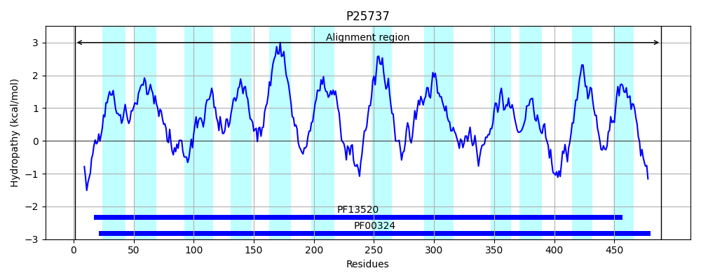
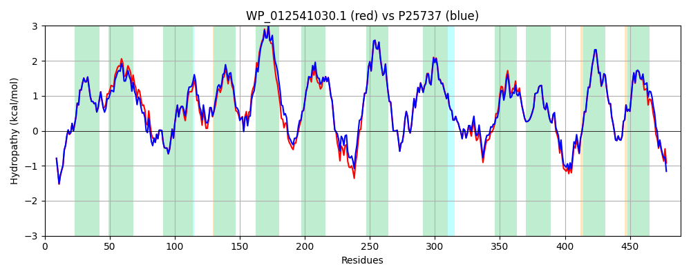

Hit Accession: P25737
Hit TCID: 2.A.3.1.2
Hit Description: gnl|BL_ORD_ID|9563 gnl|TC-DB|P25737|2.A.3.1.2 Lysine-specific permease - Escherichia coli.
Mach Len: 489
e:0.000000
Query TMS Count : 12
Hit TMS Count: 12
TMS-Overlap Score: 11.650000
Predicted Substrates:CHEBI:5584;hydron, CHEBI:25094;lysine
BLAST Alignment:
Score: 2407 , Bit scores: 931 bits, E-value: 0.0e+00, Alignment length: 489, Percentage identity: 93
Query: 1 MVSETKTTEAPTLRRELKARHLTMIAIGGSIGTGLFVASGATISQAGPGGALLSYILIGLMVYFLMTSLGELAAFMPVSGSFATYGQNYVEEGFGFALGWNYWYNWAVTIAVDLVASQLVMSYWFPDTPGWIWSALFLGIMFLLNWISVRGFGEAEYWFSLIKVATVIIFIIVGVMMIVGIFKGSQPTGWSNWGIADAPFAGGFSAMIGVAMIVGFSFQGTELIGIAAGESEDPEKNIPRAVRQVFWRILLFYVFAILIISLIIPYTDPSLLRNDVKDISVSPFTLVFQHAGLLSAAAIMNAVILTAVLSAGNSGMYASTRMLYTLACDGKAPRIFSKLSRGGVPRNALYATTVIAALCFLTSMFGNQTVYLWLLNTSGMTGFIAWLGIAISHYRFRRGYVMQGNDINNLPYRSGFFPLGPIFAFVLCLIITLGQNYEAFLKDTIDWGGVAATYIGIPLFLVIWFGYKLAKGTRFVRYSEMTFPERFKR 489
MVSETKTTEAP LRRELKARHLTMIAIGGSIGTGLFVASGATISQAGPGGALLSY+LIGLMVYFLMTSLGELAA+MPVSGSFATYGQNYVEEGFGFALGWNYWYNWAVTIAVDLVA+QLVMS+WFPDTPGWIWSALFLG++FLLN+ISVRGFGEAEYWFSLIKV TVI+FIIVGV+MI+GIFKG+QP GWSNW I +APFAGGF+AMIGVAMIVGFSFQGTELIGIAAGESEDP KNIPRAVRQVFWRILLFYVFAILIISLIIPYTDPSLLRNDVKDISVSPFTLVFQHAGLLSAAA+MNAVILTAVLSAGNSGMYASTRMLYTLACDGKAPRIF+KLSRGGVPRNALYATTVIA LCFLTSMFGNQTVYLWLLNTSGMTGFIAWLGIAISHYRFRRGYV+QG+DIN+LPYRSGFFPLGPIFAF+LCLIITLGQNYEAFLKDTIDWGGVAATYIGIPLFL+IWFGYKL KGT FVRYSEM FP+ K+
Sbjct: 1 MVSETKTTEAPGLRRELKARHLTMIAIGGSIGTGLFVASGATISQAGPGGALLSYMLIGLMVYFLMTSLGELAAYMPVSGSFATYGQNYVEEGFGFALGWNYWYNWAVTIAVDLVAAQLVMSWWFPDTPGWIWSALFLGVIFLLNYISVRGFGEAEYWFSLIKVTTVIVFIIVGVLMIIGIFKGAQPAGWSNWTIGEAPFAGGFAAMIGVAMIVGFSFQGTELIGIAAGESEDPAKNIPRAVRQVFWRILLFYVFAILIISLIIPYTDPSLLRNDVKDISVSPFTLVFQHAGLLSAAAVMNAVILTAVLSAGNSGMYASTRMLYTLACDGKAPRIFAKLSRGGVPRNALYATTVIAGLCFLTSMFGNQTVYLWLLNTSGMTGFIAWLGIAISHYRFRRGYVLQGHDINDLPYRSGFFPLGPIFAFILCLIITLGQNYEAFLKDTIDWGGVAATYIGIPLFLIIWFGYKLIKGTHFVRYSEMKFPQNDKK 489 | Protein Hydropathy Plots: |
|---|
 |  |
Pairwise Alignment-Hydropathy Plot:
|
|---|
|  |